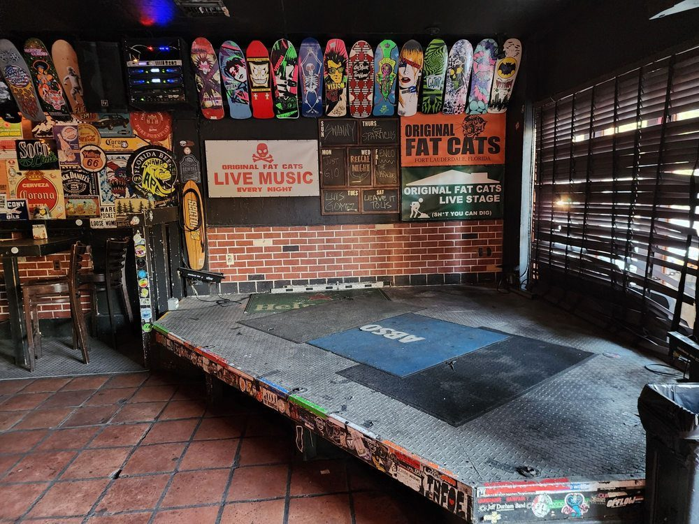

Pittsburgh, Pennsylvania
Hazy IPAs, lagers, sours, and stouts
A neighborhood craft brewery taproom on Pittsburgh's North Side pouring hazy IPAs, West Coast IPAs, lagers, fruited sours, and stouts, with outdoor seating, pinball, and live music.
Pittsburgh, Pennsylvania
A neighborhood craft brewery taproom on Pittsburgh's North Side pouring hazy IPAs, West Coast IPAs, lagers, fruited sours, and stouts, with outdoor seating, pinball, and live music.
Four Points Brewing is a neighborhood craft brewery taproom on Pittsburgh's North Side. It pours hazy IPAs, West Coast IPAs, lagers, fruited sours, and stouts, with outdoor seating, pinball, vinyl and live music, rotating food vendors, and four-packs to go.


919 Western Ave, Pittsburgh, PA
Sunday 12:00 PM to 6:00 PM; Wednesday and Thursday 4:00 PM to 9:00 PM; Friday 4:00 PM to 10:00 PM; Saturday 12:00 PM to 10:00 PM; Monday and Tuesday closed